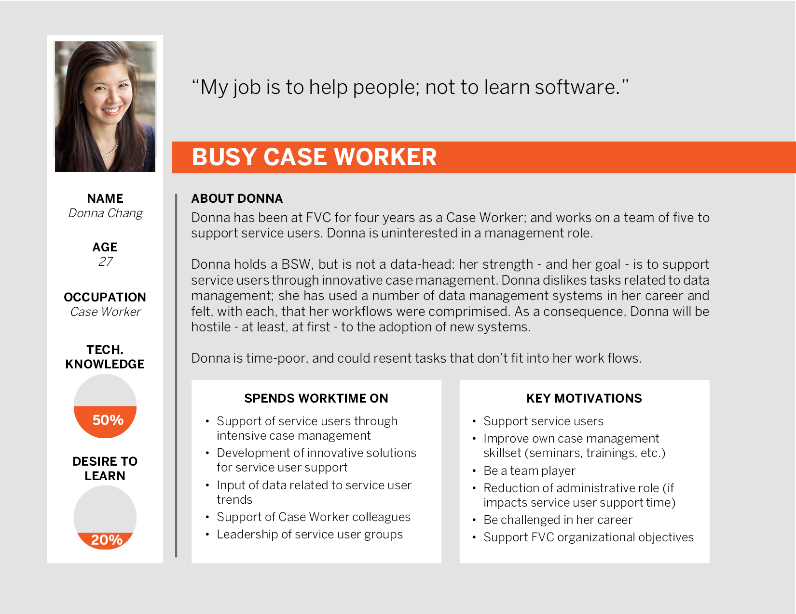

Matthew J. Smith
UX Designer
Toronto
mjs.design draft #2
FVC
0.0: Project Overview
Duration: 2 years (development was concurrent with different job duties)
Tools: dry-erase marker, paper, whiteboard, Adobe Photoshop, Adobe Illustrator, MySQL
Deliverables: research, user tests, wireframes, hi-fi mock-ups
Team Size: 6
My Own Role: UX Designer, Project Manager
Time to Read: ~25 minutes
0.1: Introduction
I was Project Manager on the development of an enterprise software called “Metrics” at a big Toronto-based NGO called FVC. Metrics was an enterprise software - that is, it was built for FVC’s own use - and in addition to the role of Project Manager, I also handled the UX Design and the lion’s share of the development.
(P.S. due to the sensitive nature of what FVC does, parts of this project are confidential.)
0.2: The Question
FVC does social services, and collects a ton of data: demographics, service access, etc.
Good data is important to every business; but for NGOs, it’s critical. KPIs for social services NGOs can be ambiguous - there’s no, e.g., "total widgets sold" - it’s difficult to capture a person (or demographic’s) “improvement” based on your initiatives, your programs, etc.
For example: if you move 100 service users (hereafter: SUs) from homelessness to homes, have you improved their lives?
The obvious answer is yes, of course you have; but as always, the devil is in the details: are there skills-appropriate jobs close to these new homes? Is the rent affordable, therefore? Does the area feature inexpensive services (e.g. food, medical care)?
If the answer to these questions is "no", and just 21 of those 100 service users get to maintain their homes long-term, was this initiative a helpful expression of your NGO’s resources?
If, then, the questions become: what made those 21 successful, or those 79 unsuccessful, the answers on what helpfulness looks like (re: your NGO's initiatives) start to look a lot more subjective; and because resources are more limited for NGOs, decisions on which initiatives to do are very much "measure twice - or thrice, or quice (is quice is a word?) - cut once".
It’s difficult: how do you "measure" when the data is so subjective? How do you ensure that your NGO’s initiatives are helpful? Smart?
That was the question that I was brought on to answer.
0.3: The Answer
FVC needed data: data collection, data aggregation, data reports.
FVC has some of the best brains in the NGO space: educated pros who direct FVC’s initiatives based on the best data on-hand.
But: where does their data come from?
0.3.1: The Case Workers
FVC Case Workers (hereafter: CWs) are the "boots on the ground" staff who interact with FVC’s SUs. Their role is to support these SUs’ needs as representatives of FVC’s initiatives; and also to collect data on these initiatives: effectiveness, demographics of SUs, etc. These CWs supply most of the data that FVC managers and directors used to make decisions re: FVC’s resources.
It’s difficult: how do you “measure” when data is subjective? How do you ensure that your organization's initiatives are helpful?
For an example: if data indicated a gap in FVC’s service of SUs who were blind, management could develop plans to train CWs, aggregate resources for the blind (e.g. transcribe schedule of a local drop-in into braille, etc.), augment office spaces with assistive techs., etc., to the improvement of FVC as an organization.
So: the CWs collect the data, and the managers use the data...
... but there were breakdowns at both ends: the in-use software was too labourious for the time-poor CWs’ workflows; and too complicated for the managers to get the data that mattered most to theirs.
FVC needed better data collection/extraction/analysis software.
And I would create it for them. Or I wouldn’t, and be let go. To find out which, read on.
1.0: Strategy: What Users Wanted
To create a better data system for these users, I had to understand where the breakdowns werewith their current process.
I met with the project stakeholders (two FVC managers and an FVC director) to create a plan.
We decided to start with the CWs - the data inputs - and then move on to the managers; and to use a method borrowed from Contextual Design called contextual inquiry.
1.1: Contextual Inquiry: At The CW Office
Because I would have (time-limited) access to FVC CWs and managers for the duration of the project, I decided to go to an office where the CWs used the current data system.
When I arrived at the office, a fire alarm had gone off - it hadn’t been a test; there was an honest-to-goodness fire on the floor above - and there was a loud fight between two SUs in the hall.
The CWs navigated these intense situations - and more - with impressive ease; but had very little time at their desks, or their terminals.
I've included here a sketch that I did of this CW office (for context):
I could see the breakdown in data collection immediately: CWs were with SUs - as mediators, as supports, as knowledge bearers, etc. - at not at their terminals (at the service window, in the halls, on accompaniments with SUs, etc.) close to 80% of the time.
The problem was that data was "produced" close to 80% of the time, too: each CW / SU interaction that I observed contained information that would be worthwhile to record (the CWs maintained a paper record that was a legal requirement - with no option to digitize - but its format didn’t have a lot of statistical value.)
Because I would have access to FVC CWs and managers for the duration of the project, I decided to go to an office where the CWs used the current data system.
I asked one of the CWs - hereafter: CW1 - if I could shadow them for a shift to observe. I explained the role that I had - that I was to create an improved data collection method - and we scheduled a date.
1.1.1: Contextual Interview
I sat with CW1 at their terminal. I watched CW1 interact with an SU, and then asked:
ME: What kinds of data do you enter into the computer?
CW1: A lot of stuff. Like, if an SU got a job, I’d enter it into the computer.
ME: Right then?
CW1: No. I wait 'til the end of the shift a lot of the time. To even get into the database I need about 5 minutes; and at that point, there’s a different SU who needs help. I want to support the SUs; that’s what I’m trained to do. I don’t want to spend tons of time at the computer.
ME: How much time does it take, on average, to enter data?
CW1: OK, watch what I have to do.
To do UX, you need to empathize with users: the tone - or even the words - users' use to describe their tasks matters; in this case, CW1 said "watch what I have to do, not "watch what I do", and I could hear the frustration in their voice.
I watched CW1 close Google Chrome - they’d looked-up a local food bank’s schedule, on behalf of an SU - and open Internet Explorer.
CW1: I hate Internet Explorer.
ME: Do you need to use it?
CW1: The database won’t work in other browsers. Even with Explorer, we had to install an old version.
I watched CW1 scan through bookmarks - local clinics, food banks, shelters, etc. - and then select one, which opened a page with login and password fields.
CW1: I can never remember the login information here.
ME: Aren’t you on a secure computer already?
CW1: Yes: no one except a CW can use these computers.
The page didn’t give clear error messages ("I think there needs to be a number in the password...") so I watched CW1 guess through different combinations before success.
The "database", a web app, was anti-minimalist bedlam: links, buttons, etc. all over the place without an obvious gate into the process. CW1 looked confused (I suggested the "Support" button: “it’s useless”) and then pointed to one of a bunch of post-it artifacts affixed to the terminal’s monitor which said, paraphrased: "to look up an SU, click on the third button on the main page, and then enter the first two letters of the SUs first two letters of their first name, and then the last two letters of their last name".
Um…
CW1 did that - which was time-intensive, itself - and had started to input their data - re: a service that an SU had accessed - when there was a loud argument in the hall. CW1 jumped in to action; and on return, found that the system had logged them out (both the local account, and the web app account).
CW1: I’ll need to do it all over again…
CW1 waited until the end of their shift to do so; and at that late time, had to be clued to remember what it was that had to be entered in the first place.
I interviewed different CWs, but the negative response to the data system was ubiquitous: it was incompatible with their jobs because it was complicated and time-intensive; and it felt to the CWs like it had to be “relearned” with each use.
I built a CW user persona before I met with the other users: the managers.
1.1.2: The Managers
I had less access to the managers - their jobs could be more mobile - but their problems with the data system were similar: that it was complicated, and time intensive; and, too, that it didn’t output clear reports to extract the data that CWs had entered.
For a facsimile, managers had to do manual addition, line-after-line (i.e. “SU1 was enrolled in employment prep… SU42 was enrolled in employment prep…”, etc.), which put a wrench in data analysis.
The managers' problems with the data system were similar: that it was complicated, and time intensive; and, too, that it didn’t output reports to extract the data that CWs had entered.
I built a persona for the managers before I returned to the project’s stakeholders to present a comparative analysis.
1.2: Comparative Analysis
Based on what I had seen in the interviews, I developed a comparative analysis (in particular, on pain points) of the in-use data system.
- system was difficult to access; use of IE8, no login error prevention, etc.
- had unclear prompts for most common tasks; i.e. user wants to enter birthdate, but no obvious path to do it
- data collection was time-intensive (could be up to 10 min. per instance)
- half-entered data - due to CW response to SU mid-process, etc. - wouldn’t save (or, at random, would… but CWs couldn’t edit once saved)
- required too much instruction; CWs could not use system without prompts (in the form of artifacts like post-its, or check-ins with other CWs, managers)
- data extraction required manual tallies; no data outputs
All-in-all: ungood (does the word “ungood” sound unprofessional?) UX.
1.3: Brief
I prepared a UX brief based on the user research - CWs and managers - that I had done.
The CWs - the data input - needed a system that respected their jobs; the in-use systems were complicated, time-intensive and incompatible with the regular “interruptions” that occurred on-shift.
The managers - the data output - needed a system with data extraction, and analysis. It needed automated, obvious reports to help FVC plan for the future.
The data system that I would create was to be the default in-house method for its role; users would be required to use it as a part of their jobs.
I needed to ensure that the designs that I made were near-perfect; and that the project was as feature-rich as it needed to be.
No pressure.
2.0: Scope: The Features
I worked with the project’s stakeholders to outline the data system’s features. It was important here to delineate between “must haves” and “nice to haves”.
Because the system would capture statistics, the stakeholders decided on the name “Metrics” (hereafter, I will refer to the data system as Metrics).
2.1: Storyboards
I developed a series of storyboards for Metrics based on hypothesized users’ interactions with it.
It’s helpful to picture - and sketch out - scenarios wherein your product is used. Where is the user? What is the user up to at the time? etc. are good questions that can help you to empathize with your users, and their contexts.
I’ve included one of these storyboards here:

2.2: Features: Must Haves, Nice To Haves
Enterprise products can pose unique challenges: in Metrics’ case, its prospective users had a kind of built-in wariness for data collection systems based on past experiences. In other words, poor UX in past continuums of data collection had created a friction that Metrics’ designs would have to overcome to ensure smooth user adoption.
The stakeholders and I met with a group of CWs and managers to discuss desires for Metrics. There were a lot of suggestions; and these were the outcomes (based on time, budget, etc.):
- assume “time poor” users: should take no more than 15 sec. - 45 sec. to enter unit of data (e.g. “John Q. Public got a job in customer service”)
- accessible: must adhere to AODA for disabled users (blind users, colourblind users, etc.)
- usable: user should recognize what options are, where to enter data, etc., without help
- support: … but help should be available, if needed; and it should be robust
- navigation: user should be able to move around system fast (i.e. transition between screens); navigation links should be clear, obvious
- organization: fields should be categorized in ways that “make sense”
- extraction: should output formatted reports (.pdf, .doc, .xls, etc.)
- time-stamps: data entered should be time-stamped by the system; users shouldn't be required to fuss with date-pickers, etc.
- modular: admins. should be able to edit - or add - fields, where appropriate
- autosave: should prevent data loss if interrupted mid-process
- secure: secure data, but passwordless data input
- deployable: can be accessed on FVC LAN-connected terminals; no connection to Internet required; no browser required
- meaningful: data input and output should be relevant to trends important to the FVC (i.e. “no. of SUs who attended FVC Drop-In services”, etc)
- error prevention: should recognize duplicate data, prevent
Armed with the feature list, the stakeholders and I considered development: what medium could meet our requirements (and minimize development time, and cost)?
2.3: Development Considerations
I like to code.
It isn’t a requirement of (most) UX professionals, but I like it and like to contribute code to product development when I can. I have skill with JavaScript, Python, Ruby, Sass (which compiles into CSS), SQL, Visual Basic, etc. Once you understand one object-oriented language, you can, at least, hazard through others (with your two best friends: Google, and the docs).
In Metrics’ case, it was obvious to me that a database was needed; and for the sort of data, it had to be relational. FVC used Windows; and so I recommended SQL - I would design the structure, create the queries, etc. - with Visual Basic for the front-end, which I would code.
With the stamp of approval from the stakeholders, I got into Metrics’ information architecture.
3.0: Structure: Feature Best Fit; User Journey Maps
I had the mission parameters. It was time to execute (he said, to the blare of a guitar riff).
in Metrics’ case, the prospective users had a kind of baked-in wariness for data collection systems based on past experiences.
I had to consider content.
I developed user journey maps to represent typical use cases to keep pain points, breakdowns, etc. in mind while I moved through the content. I’ve included one of them here:
I needed to counter the user’s negative associations with data collection with a more positive - and straight-forward - experience; but I did anticipate user resistance to Metrics, at first.
3.1: Content: Text Fields, Combos, Lists
The stakeholders had developed content fields - i.e. “SU obtained employment”, “SU referred to Drop-In Centre”, etc. - based on what was important for them to measure (with consideration to future requirements).
We went through each field and assigned field types (e.g. “text field”, “radio”, “combo”, etc.). We wanted the fields as fast and as “fool-proof” as possible; and to prevent user error - and unuseful data - through the minimization of “open” fields (e.g. text / memo fields).
3.2: Content Buckets (Card Sort(of))
I met with the stakeholders and a group of CWs to discuss the fields that had been developed in 3.1 and categorize them, e.g. if the user needed to record that John Q. Public became employed, where, in the context of the system, would that happen?
I set it up like an open card sort. We looked at the fields (which the CWs suggested useful additions to, i.e. add “hidden homeless” (e.g. couch-surfers) choice to “current housing situation” combo) and categorized them. I led the discussion - based on the scope - to ensure that the buckets were balanced.
After the discussion, we wrote out our categories: broad enough to be extendable if the need arose, but not so broad as to be ambiguous:

(P.S. the stakeholders didn’t sign-off on the names of these categories right then, which would impact the surface designs later on; but were good with the categorization.)
3.3: Forms
For Metrics’ interface, based on the content, I envisioned tabs - each a representation of a content bucket, and populated with associated fields - with options for SU search, help, etc., each with an on-hover tooltip. I didn't want to overwhelm the user with options or menus. Metrics was uncomplicated (the data goes, the data goes out) and I wanted its UX to be uncomplicated, too.
Each successful SU search would inform the user of the name associated with the tabs beneath (i.e. with John Q. Public selected, information relevant to his ID would be within Metrics’ ID tab, etc.)
I wanted users to be able to return to the dashboard from each screen, and decided to include a "Back" button with the logo (where users might expect to find it). In a similar sense, I decided to include a "Next Tab" or "Next Page" button at the bottom right; because while I envisioned most users would move from tab to tab based on need, I wanted users who thought more "in sequence" to be able to move through the tabs like a process (though the final tab's "Next Tab" button would return the user to the first tab, like a circle).
More or less, I pictured Metrics as a "drop-in/drop-out" experience; that is, no required fields. The CWs didn't have time to plod through mega-forms just to find that a single unselected radio had prevented their save. Metrics' fields were "one offs"; each categorized, but non-sequential (e.g. for an SU to have gained employment, it doesn't mean that there was engagement in employment services within the same period, etc.)
I reasoned that, in most use cases - post-adoption - users would want to search for an SU, and then enter data, and then save with no other prompts - or distractions - needed.
I did a mock-up for the stakeholders and users. Two CWs suggested that the search be both a search and a combo, to enable users to choose to enter an individual SU name or scroll through all SUs within the system. I’ve included an image of the interface being drawn here:


Tabs were an understood convention (for the most part) and the design met most of the criteria from the scope: users could navigate between the tabs with clicks, and because Metrics would be deployed as a desktop application (vs. a web application) there were no concerns re: bandwidth, load time, etc. for each "page".
For the interface, I envisioned tabs - each a representation of data categories, and populated with associated fields - with options for SU search, help, etc.
The user could enter the system, recognize the tab that best represented the data to be entered - and if not, there was “Help” (which I expand on in 3.4) - do so, and then save.
I considered here that users might save the same form multiple times, and in succession; that is, if an SU informed a CW that there had been an update to their full-time education status, and then, after, an update to their part-time education status, there might be two consecutive saves. For scenarios like these, I decided to include system feedback, in the form of a "saved at hh:mm:ss" message (on that tab, to suggest association), so that users could compare against the ubiquitous taskbar time and confirm that their most recent save was a success.
Based on user interest, I would include an "Undo" button, too - with some distance from the "Save" button - which would (after a confirmation modal) revert the active form to its initial state (within that same session; not initial like from the beginning of time).
3.4: The Help Button
The stakeholders and I wanted a "Help" button to be prominent; a fixture as the user moved through the different screens of Metrics' interface. I wanted to give the CWs the best experience that I could; and that meant an appreciation for their context.
FVC CWs don't keep 9 - 5 hours. SUs can be vulnerable; and their support needs don't end when the sun sets. There are CWs on-site most hours (even over night); and for them, it was important that Metrics could be used even when I - or another trained FVC staff - wasn't available to instruct them.
e.g., a CW wants to record an interaction with an SU, so the CW opens Metrics, selects Clients, and then... has no idea what to do. Confused, and frustrated, the CW closes Metrics and the data is unrecorded.
The first line of defense vs. user confusion or error is a well-planned interface / information architecture; but those aren't enough in each case. Tooltips, placeholders, etc. can help, too... but when all else fails, a "Help" - or "Support" - option, with walkthroughs, explanations, etc. can ensure that more users can accomplish their tasks.
The "Help" button that I would implement would be contextual based on a user's position in Metrics' flow when the button was clicked; e.g. when clicked in Reports, would reveal Reports screen help, etc., with an "Other Help Topics" to move the user to other help documentation. "Help" would reveal modals which would give users step-to-step instructions for each important system function (which, fortunate for me - and Metrics - was a small order; there weren't a lot of functions to explain).
I would user test the assumptions that I'd made for "Help" later on in the project; the most important aspect of "Help" for me was that it could enable a user to obtain support with system functions to ensure that they could conclude their flows.
3.5: Reports
How would Metrics represent its reports? Would reports be generated based on individual SUs - for CWs - or based on temporal (i.e. month-to-month) data?
The stakeholders decided to do both: CWs should have the option to generate reports based on SUs to facilitate case management; but reports - for managers, directors, board members, etc. - should be data - abstracted from SUs - based on user-provided date range.
I decided to compartmentalize those two flows: on Metrics’ launch, the user would be presented with a dashboard that allowed for selections between SUs, Reports, or Admin. (where content could be updated, or changed based on FVC’s needs). Functions to enable different users to access different content fast. I considered the development of different versions of Metrics - so CWs would be launched into the SUs screen without the dashboard - but decided not to: each FVC terminal saw use from CWs and managers alike, and so it was important that the experience of Metrics was consistent, regardless of who was on which terminal.
I would test these assumptions as I moved forward; but from then, I began to create artifacts based on those ideas.
3.6: Hierarchical Tasks Maps
To better envision the steps which users could take - through Metrics - to accomplish their tasks, I developed hierarchical tasks maps. I’ve included one here:
(P.S. "Login" refers to the user’s terminal, here.)
Based on the research (into needs, tasks, etc.) discussions with users, stakeholders, etc. I had a good idea for Metrics’ overall layout.
I obtained stakeholder approval for the information architecture designs and then ploughed ahead.
4.0: Skeleton: The Form Bone’s Connected To The…
I’d started to move the designs towards a coherent, user-minded plan.
Metrics would open on to a dashboard with three options for users: Clients (a.k.a. SUs), Reports and Administration.
I arranged them in order of most-used to least-used (as CWs would be the users in Metrics most often, in Clients). I imagined Administration as least-used because the stakeholders alone would have access, and wouldn’t update content (e.g. fields, tabs, etc.) often.
I imagined that CW users would have Metrics opened throughout their shifts and restore it from the Windows taskbar when there were 30 sec. of freedom to record data between external (i.e. outside of the system, and terminal) tasks with SUs, etc.
4.1: User Flows
I would start to wireframe (wireframe (verb): to wireframe) but decided to first develop (interface-based) user flows to present to the stakeholders; and to use to focus on the user’s experience as I built out the user interface. I’ve included one here (in the same continuum as the scenario as the user journey map from 3.0):
4.2: Wireframes: Sketch
I look at the wireframe process as where the UX rubber meets the UX road (... what?): a wireframe is - or, should be - a culmination of your design efforts: the aggregation of concept, user research, feature decisions, etc. and should feel like the natural progression of them.
I like to start the wireframe process with an iterative draw-a-thon on paper or whiteboard or both. These impermanent media enable me to fail again and again; but with each failure, improve to where I can conduct in-depth user tests of the best results. I’ve included two examples here:
It represents an advancement of the 3.3 discussion. I decided to retain text (vs. icons) for buttons. Outside of space-limited contexts, the best icon is often a label (so "Home", spelled out, vs. an image of a house, etc.).
Visual metaphor is an aspect of UX that has evolved, for sure; but still doesn't have the consistence of text labels. As a designer, you could assume - based on convention - that the user will recognize an image of a disk on a button as "Save"... but what about "Export"? "Undo"? Sure, you have knowledge of those conventions, but do your users share that knowledge?
That said, icons are useful for constrained space, and have more universalism (or language agnosticisim) but Metrics didn't have a ton of functions, and therefore screen real-estate wasn't a concern for these designs. For Metrics, I opted for icons in tandem with text labels, which I would test with users for value.
I was fortunate to have had the access to Metrics’ users (CWs and managers) throughout the project. The designs had been, more-or-less, collaborative; and I followed the feature specifications and information architecture that we’d developed as a team and so I felt confident in them.
4.3: Wireframes: Lo-Fi
Based on the user tests, I used AxureRP to produce a lo-fi wireframe for each of Metrics’ screens. I’ve included the Clients screen, with its annotations, here:
The stakeholders and I printed some of these pages and did a kind of informal paper prototype exercise with a group of CWs. I've included two paper prototype scans here, with marker scribble to indicate (to the participants) points of interaction:


These CWs appeared comfortable with the designs, thus far (including "Help"); but there was a user critique that stood out to me: that the "Next Page" and "Previous Page" buttons - that I'd devised in 3.3 - were a distraction. Users weren't sure if these buttons would cause the screen to change - i.e. from the Clients tabs page to a different page altogether - and wondered about the need for button navigation when the tabs were more direct.
I imagined that CW users would have Metrics opened throughout their shifts and restore it from the Windows taskbar when there was quick freedom to record data.
When I'd considered the range of computer aptitude of Metrics' users, I'd thought to accommodate different use approaches (as well as disabled users, who might tab through the controls).
But: the critique was good. Good designs are "learnable"; that is, if users can easily follow information scents to their goals without certain nav options, then you probably don't need them.
4.4: AODA
As a UX Designer, you are your users’ best (and, at times, alas, sole) advocate. Your designs should always be as accessible as possible to ensure the best - and most consistent - experience for each user.
Metrics was developed in, and for use in, Ontario, Canada. Ontario’s 2005 accessibility legislation is called the Accessibility for Ontarians with Disabilities Act (or: AODA).
Ontario wants full compliance with AODA for 2025; and while that’s a while off, our products should be accessible regardless.
FVC is an inclusive organization; and as an FVC staff person, I was well-acquainted with accessibility laws, as well as WCAG 2.0 - and was able to implement AODA specs. into the designs for Metrics.
AODA implementations included (but weren’t limited to):
- screen-readability: I would ensure that Metrics could be navigated through with Narrator (Windows’ built-in screen-reader, FVC’s terminals could access), or other assistive tech., for users who are blind
- contrast: I would ensure that type was always well-contrasted against backgrounds, for colourblind and users of limited vision
- tab-friendliness: I would ensure that tab-stops were well-ordered, for users who navigate without a mouse
- obviousness: clear labels, universal tooltips, and conventional icons (paired with text), for all users
Metrics was developed in, and for use in, Ontario, Canada. Ontario’s 2005 accessibility legislation is called the Accessibility for Ontarians with Disabilities Act (or: AODA).
None of these specs., or others, were hard to integrate into Metrics’ designs. Accessibility is important for everyone, everywhere; even if you wouldn’t give me a job on your project or team (but you 100% should, because I’m the coolest), I would be glad to consult pro bono re: AODA compliance, from a digital products perspective.
5.0: Surface
With the lo-fi designs granted stakeholder approval, I moved on to visual design.
There weren’t brand concerns; FVC was an established brand, with colours, type, etc. I would use FVC’s blue (HEX: #4D85C5) and adhere to their clean-but-still-creative aesthetics to build the visual designs for Metrics’ screens. I used Adobe Illustrator. For consistency, I’ve included the design that is a progression of the lo-fi Clients screen wireframe that I included in 4.3 here:
For these, I decided to move the logo to the right side of the screen and reserve the top left for a button which would enable users to return to Metrics' main menu. I reasoned that Metrics users wouldn't need to be reminded about the organization which employed them (at least, not at the expense of control functionality). I would test these assumptions, re: aesthetics, later on.
Really, showiness wasn’t Metrics' goal. Metrics was a tool, a digital hammer; and in the go-go-go jobs of FVC CWs, one that would, maybe, be resented until the end of time. But: I felt that the final designs fulfilled the project’s scope; and facilitated Metrics’ two must-dos, which had been:
to facilitate the CWs’ user experience:from the terminal, open Metrics, select Clients from the dashboard, search SU, select the relevant tab, enter data, select save (for these designs, I added a "last saved" text beside the "Save" button, to assure the user that the data had saved for real).
to facilitate the managers’ user experience: from the terminal, open Metrics, select Reports (or Administration), enter date / date range to see data, export data to .pdf, .doc, or .xls.
The last piece of the Metrics design puzzle wasn’t, alas, a corner piece, but instead was: the final presentation.
5.1: Final Presentation
At the stakeholders’ request, I printed booklets that showcased the hi-fi design screens for each person at the presentation to peruse (and critique); and be trained on.
I won’t lie to you: I was nervous. Metrics was a large, important project, and it was important to the stakeholders - and to me - that it succeeded.
But: the response was positive from CWs and managers; and several expressed their belief that Metrics would improve their workflows; and that it “looked easy to use”.
Music to a UX Designer’s ears.
6.0: Development
Development is outside of the scope of the project; but I’ll admit that I enjoyed the process a lot. I like data (nerd alert); and database design - which, like UX Design, has a lot of considerations that you wouldn’t, maybe, expect - is fun for me.
I wrote Metrics’ front-end - that the users would interact with - in Visual Basic and styled its forms, etc. in Microsoft Access. I wrote a bunch of SQL to glue it together. I've included some Visual Basic here:
7.0: Outcomes
With the design and development completed and Metrics deployed on the requisite FVC terminals, I returned to “the field” to observe users’ interactions with Metrics. Users had been trained (through management) based on instructions from the stakeholders and I.
I did a kind of reverse contextual interview (a contextual... outerview... ) at the CW office, and was fortunate because the first CW who I interacted with was a recent hire and had no knowledge that I’d made Metrics.
I won’t lie to you: I was nervous. Metrics was a large, important project, and it was important to the stakeholders - and to me - that it succeeded.
With UX Design, unobtrusiveness - selective unobtrusiveness, I mean - is a useful tool; in designs, and in person. If users are aware that you were responsible for the designs - or if the designs seem to be “finished”, or “complete” - then there could be reluctance to criticize (hence: lo-fi designs that precede hi-fi designs; or AxureRP’s “sketchiness” option, etc.).
I watched the CW (hereafter: CW2) interact with an SU and then open Metrics from the Windows taskbar (it had been open), enter the SUs name into the search, open the requisite tab, read the available fields, select an option from a combo, press “Save”, and minimize.
ME: What did you do there?
CW2: Put info. into the database.
ME: What was that program you used?
CW2: I don’t remember what it’s called. The database. We’re supposed to record info. into it. Stats.
ME: Is it hard to use?
CW2: No. At my last job, we had to use (name of a competitor’s product). It took forever. This one seems better.
ME: Faster? Easier to use?
CW2: Yeah. Just takes a second to do, usually.
Metrics had no internal predecessor to compare itself to, stats-wise; but stakeholders reported that data collection, analysis, and extraction were improved; and that Metrics had fulfilled its promises:
CWs reported that Metrics enabled them fit data collection into their jobs more-or-less without interruption.
Managers reported that their access to data - and therefore, their awareness of SU trends - had seen improvement, and that reports on data could be generated (and analyzed) with serious ease.
The stakeholders were pleased with Metrics; and so were its users. I was pleased that I'd been able to contribute to such an important organization.

8.0: What I Learned
That UX Design is more “negative space” than “positive space”. In art, negative space is the space where the art isn’t. When UX Design is done right, it can be next-to-invisible; because when UX Design is done right, the user can experience the product without constraint, and absent the distractions that can confound tasks, or use. Your goal is to go almost unnoticed; to facilitate your users’ interactions with your product to accomplish their own goals, and not to see your brush strokes in the experience.
Oh: and I learned that I hate Visual Basic.
I’m serious: I hate you, Visual Basic.